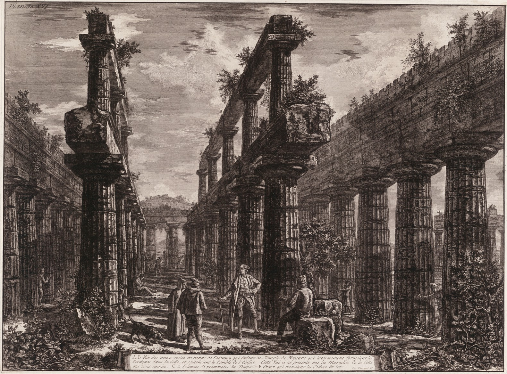

View of the Remains of the Two Rows of Columns in the Temple of Neptune (Different Views of Paestum)
Giovanni Battista Piranesi · 1778 · Etching on ivory laid paper · 49.8 × 67.5 cm · Art Institute of Chicago
Free to use
Open in The ArtchiveFull-size file ↗
More like this


More by Giovanni Battista Piranesi